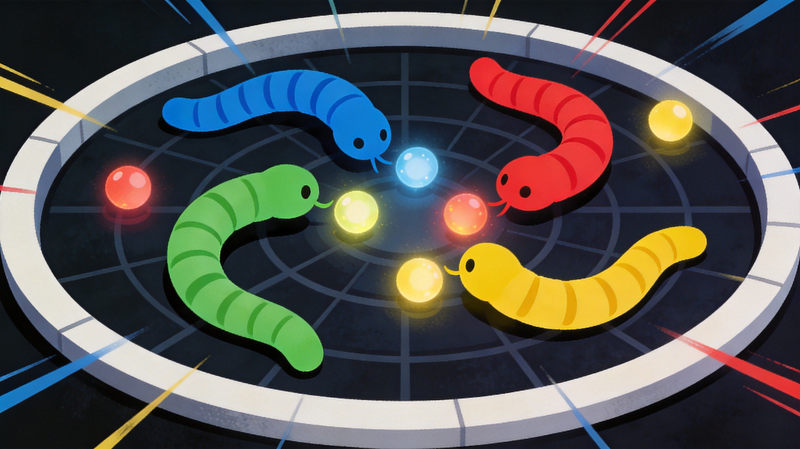
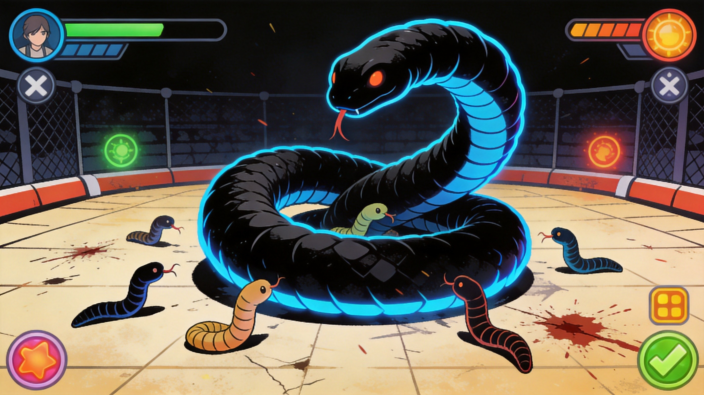

Let's be honest: Wormax.io looks a lot like Slither.io at first glance. Same concept, same snake-pit chaos, same "don't run into anything or you'll explode into everybody's lunch" rule. But once you spend some time with it, you notice the differences — different visual style, different power-up systems, different maps. This guide isn't going to teach you what a snake game is. It's going to teach you how to win at Wormax.io specifically.
🎯 Game Basics
The Wormax.io Difference
Wormax.io is a fork of the classic Slither.io formula with its own visual identity and gameplay twists. The maps are darker and more atmospheric, with neon accents and particle effects that make a big worm look genuinely intimidating. The power-up system is more developed, and the server sizes tend to be smaller, meaning fewer players but more intense competition.
Controls
- Mouse — Your worm follows the cursor smoothly. The closer the cursor is to your worm's head, the faster you go in that direction.
- Spacebar — Activate boost. Costs body mass but provides speed. Use strategically.
The Golden Rule
Your head cannot touch any part of any worm — including your own. Your body, however, is safe. This asymmetry is the entire game's strategic foundation. You can wrap around opponents, use your own body as a barrier, and force collisions.
What Happens When You Die
Your worm explodes into food pellets that mirror your pre-death size. A massive worm's death literally reshapes the game — whoever controls that corpse gets enormous instantly. This makes dying as a big worm catastrophic and killing the top worm the single biggest momentum shift in the game.
🗺️ Map Features
Wormax.io rotates through maps with different themes, each affecting gameplay subtly.
Classic Dark Map
The standard arena. Dark background, bright neon worms, food items that glow. Good visibility, fast gameplay. Best map for beginners because you can see threats coming from a long way.
Labyrinth Map
Walls and corridors create natural traps. Worms that grow too large struggle in tight spaces. This map favors smaller, agile worms who know the layout. Study the wall patterns — once you know the shortcuts, you can outmaneuver giants.
Void Map
No walls at the edges — you can go forever in any direction until you loop back. The open space sounds great for big worms, but without barriers to cut people off, it's actually harder to trap opponents. Everyone is more cautious, leading to slower games.
⚡ Power-Ups Guide
Power-ups spawn randomly on the map and grant temporary abilities. They appear as glowing orbs with distinct colors.
- Speed Boost (Blue Orb) — Temporarily increases your speed significantly. Great for dodging or rushing food. Duration is short, so use it for escapes rather than travel.
- Invincibility (Gold/Shield Orb) — Become invulnerable for a few seconds. You can pass through any worm safely. Excellent for aggressive plays or crossing dangerous zones.
- Magnet (Purple Orb) — Food within a radius automatically flies toward you. Saves time navigating and lets you eat in otherwise risky positions.
- Ghost (Green Orb) — Become semi-transparent and invisible on other players' minimaps. Useful for ambushes or fleeing without being followed.
Big worms often camp near power-up spawn points. If you see a power-up in open space with no one around, assume it's bait. Check the minimap before going in.
🎯 Core Strategies
The Loop and Wrap
The most fundamental technique in any snake .io game: circle around an opponent until they're trapped against your body. If they're larger than you, you're trying to make them run into you. If you're larger, you're bullying them into submission. Either way, the principle is the same — use your body to control their movement options.
Controlled Boosting
Boosting costs body mass, which seems bad. But in practice, a well-timed boost is worth far more than the segments you lose. Use boost to cut off a fleeing opponent, to escape a trap, or to seize a food pile before competitors arrive. The key word is "well-timed" — random boosting is just shrinking yourself.
Divide and Conquer
When facing multiple opponents, your goal isn't to beat them all at once. Your goal is to separate them and take them one at a time. Use walls, obstacles, or your own body to split a group. One-on-one fights are manageable; one-against-many is a death sentence.
The Predator Mindset
Stop thinking like prey. When you see a worm that's bigger than you, don't just flee. Study its movement. Is it predictable? Does it favor one side? Every worm has patterns, and big worms especially get lazy. Use their overconfidence against them. Cut off their escape route and let them run into your body.
Managing Your Body
As you grow, your body gets longer and harder to control. You need to actively manage your own tail — don't just focus on the head. Every turn you make is a potential self-collision waiting to happen. When navigating tight spaces, slow down. Speed kills big worms more often than enemy players do.

💡 Pro Tips
- Play dead when threatened. If a bigger worm is chasing you, act panicked and make wide, predictable turns. Let them think you're scared. Then flip the script and circle them.
- Use the circle of death. When a major worm dies, there's a feeding frenzy. Position yourself on the edge of the circle rather than diving into the center — less competition for the scraps, and you won't get trapped.
- Know when to leave the leaderboard. Being at the top makes you a target. Stay large but not the largest. Let someone else have the spotlight.
- Small worm ambush. A tiny worm with full boost and a clear run at a massive worm's side can kill a giant in one shot. Size isn't everything.
- Minimap discipline. Glance at it every few seconds. The less you look, the more likely you are to sail straight into someone's body.

❓ Frequently Asked Questions
Q: How do I grow faster in Wormax.io?
A: Focus on map areas where large food items cluster. When a worm dies nearby, prioritize eating from its corpse quickly. Boosting to reach food before others is worth the mass cost.
Q: Is Wormax.io different from Slither.io?
A: Yes. Wormax.io has different visual styling, a distinct power-up system, smaller server populations, and unique map rotations. The core mechanics are similar, but the meta-game differs.
Q: How do I avoid dying as a small worm?
A: Stay near the map edges, avoid open areas where large worms hunt, and move predictably so big worms don't perceive you as a threat. Small worms are nimble — use that advantage.
Q: Can I play Wormax.io on mobile?
A: Yes, the game is fully playable on mobile browsers with touch controls. The experience is slightly less precise than desktop but completely viable.
Q: What happens to my progress if I close the browser?
A: Your score and progress reset when you close. Wormax.io is session-based with no save system. All progress is lost on refresh.
Q: How do I create a private room in Wormax.io?
A> The private room feature is accessible from the main menu. You can share the room code with friends to play together without random opponents.
Q: Does Wormax.io have ads?
A: The browser version may show occasional ads between rounds. A premium version (if available) removes ads for a one-time purchase.
Wormax.io rewards patience, map awareness, and ruthless opportunism. Don't rush the leaderboard — let the game come to you, strike when the moment is right, and never, ever run into your own tail.